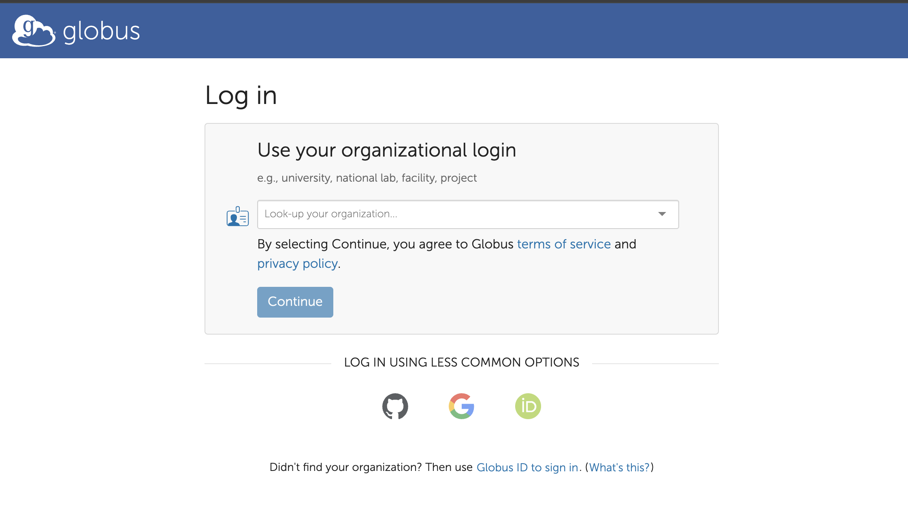
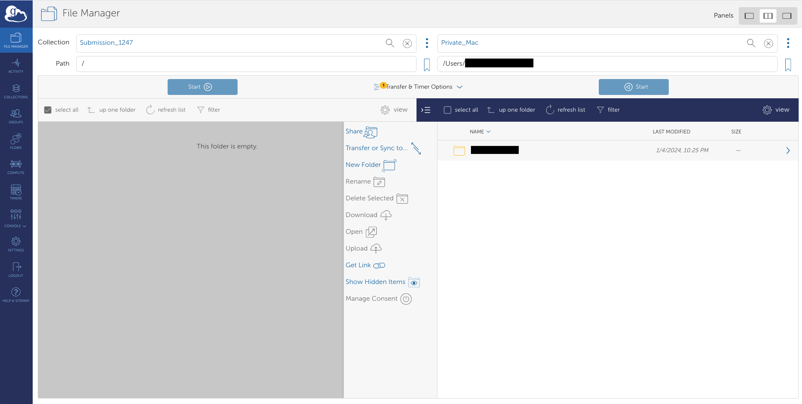
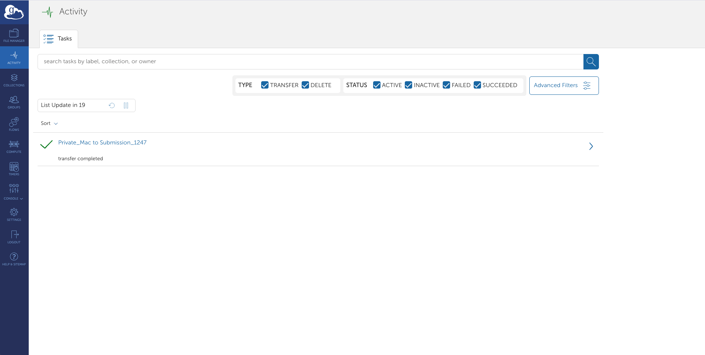

Globus Upload Instructions
Setting up Globus Account
Globus is an efficient solution for large file transfers. Follow these steps to set up your Globus account and connect.
Authentication Options
When accessing Globus for the first time, you have three authentication options:
- Organizational Login (recommended): If your organization is listed in the dropdown menu, select it and proceed with your institutional credentials.
- Google/ORCID/Github Account: You can authenticate using your existing Google/ORCID/Github account.
- Globus ID: You can create a Globus ID by signing up and verifying your email address.

Transferring Files via Globus
Once you have a Globus account, you can transfer files using one of the following methods:
Option 1: Browser Upload (for smaller files <1GB)
- Open the Globus collection URL provided for your submission.
- Click on "Upload" and "Select Files to Upload".
- Allow authentication/consent for the Globus web app to perform HTTPS uploads.
- Select files from your local directory and start uploading.
Option 2: Globus Personal Connect (for large files >1GB)
This is the recommended option for transferring multiple large files.
- Install Globus Personal Connect client:
- Set up local collection: Follow the installation instructions to set up your local endpoint/collection.
- Transfer files:
- Open https://app.globus.org/file-manager in your browser.
- Select "Set two panes" at the top.
- In the left pane, search for and select the collection ID provided for your submission.
- Click on "Transfer or Sync to..." button.
- In the right pane, search for and select your local collection that you created during setup.
- In your local collection (Right pane), select the files you want to transfer.
- Click on "Start" to begin the transfer task.
- Note: Please select only files, not directories.
- Check transfer status:
- After starting a transfer, click on the "Activity" button in the left side menu.
- This will display all your active and recent transfer tasks.
- You can monitor the progress, see completed transfers, and check for any errors.
- You can also cancel ongoing transfers from this screen if needed.


After File Transfer
Once file transfer completes, proceed with registering files and their MD5 hashes in Annotare by clicking on "Globus Upload" button and following the instructions there.
You can find more information about sharing data via Globus at https://www.globus.org/globus-connect-personal